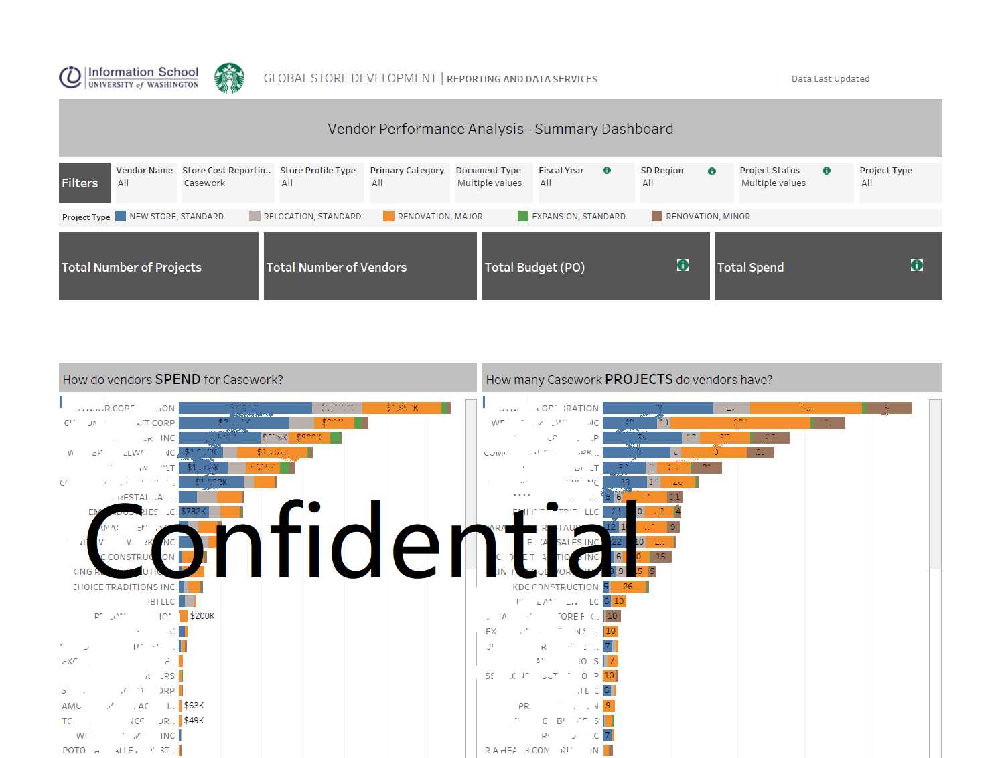
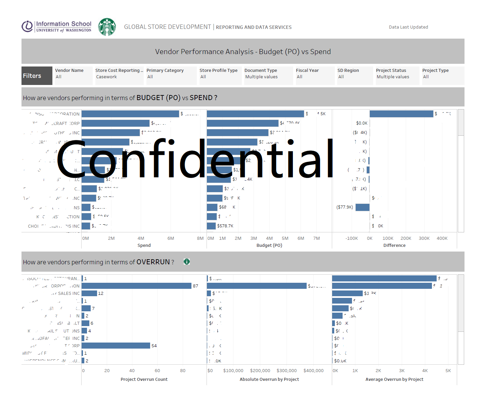
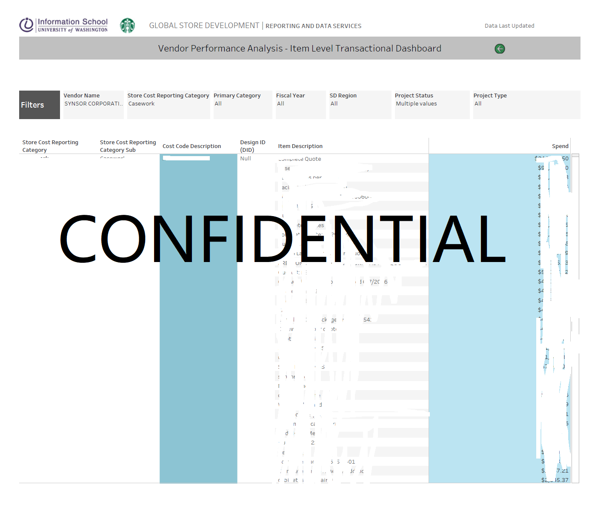

During the process of building and renovating stores, key decisions are made surrounding which suppliers to use for materials and services used during the design and construction process. As data analysts and report developers, we work closely with the Store Development business team to provide analytics back to the supply chain team to inform decisions around which vendors to contract with. The task was to pull information from transactional systems into a tabular model to create data visualization to answer key business questions
Key business questions:
• What are the top vendors by location (division, region) for certain types of items?
• Which vendors are commonly going over budget or requesting multiple changes to contracts during the process of completing projects?
• How do these vendors with overages compare to other vendors without overages and are there opportunities to make better decisions on vendor usage?
• Are there outliers by project type or location that are more prone to cost overrun?
Report Development Process:
• Analysis and Design: Meet with business stakeholders and identify desired outcomes, key business questions, and KPIs.
• Report Development: Use tableau to propose data visualization that address the KPIs and business questions outlined in the analysis phase of the project.
• Documentation and Hand-off: Complete standard documentation on report architecture and design as well as technical documentation on code and report visualizations.
Summary Dashboard
Analytical Dashboard
Transactional Dashboard
